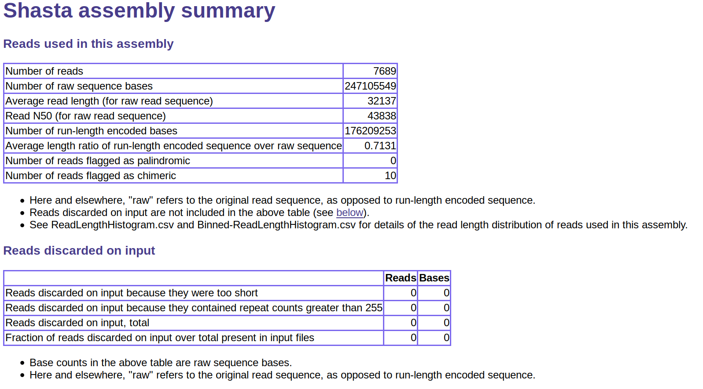
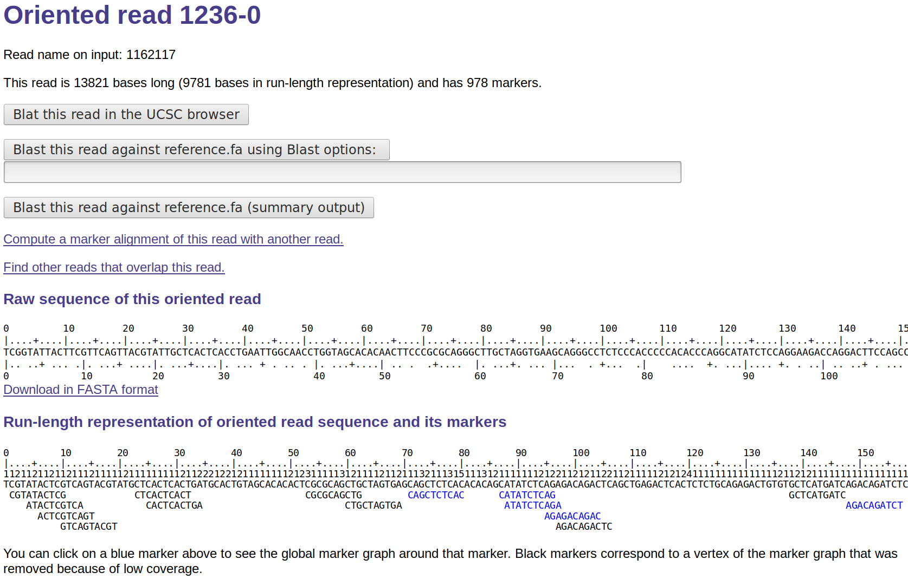
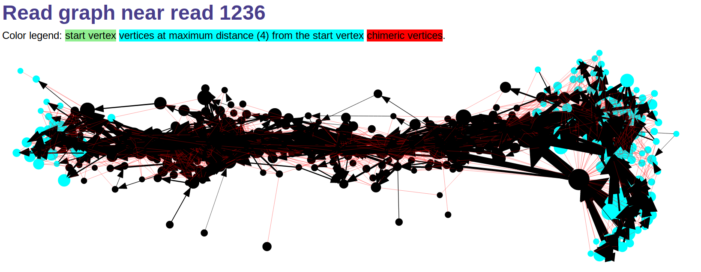
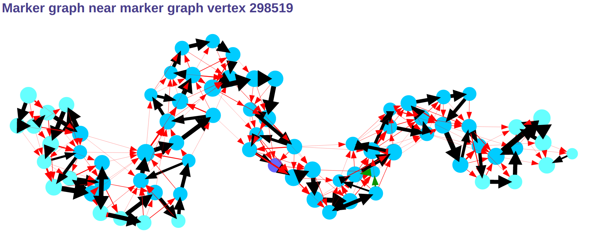
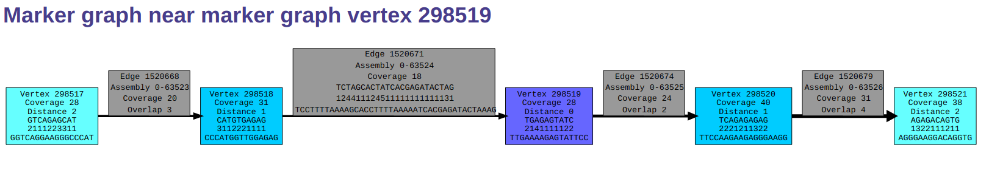
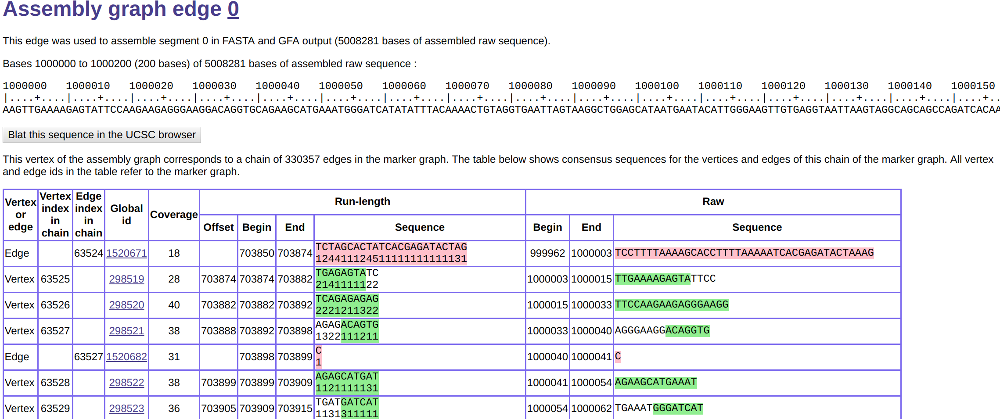
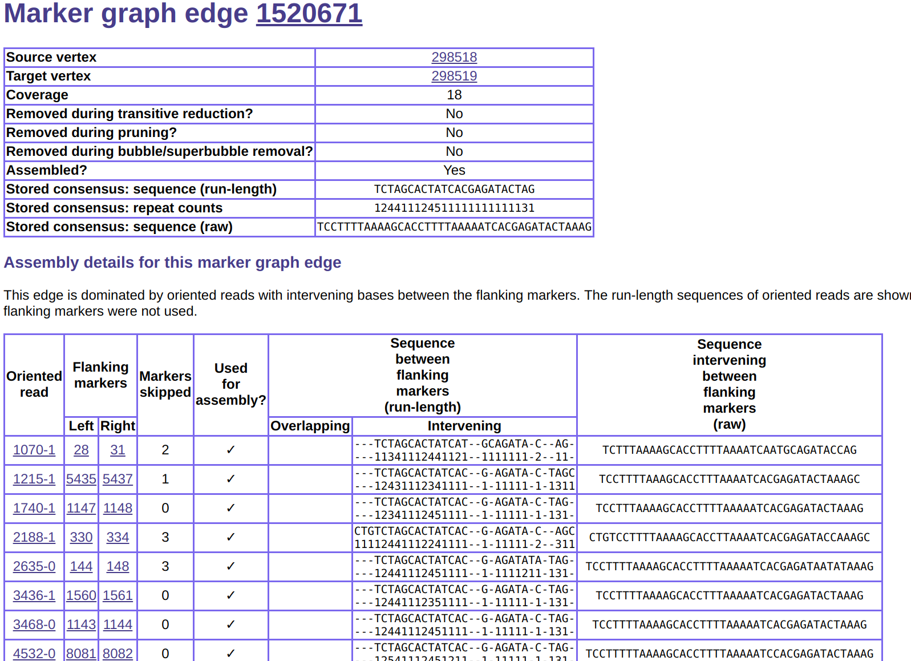

Exploring assembly results
The Shasta assembler provides functionality that allows exploring
details of many data structures used during assembly.
This can be useful to gain insight into assembler behavior
for purposes of testing, debugging, parameter optimization,
development of new algorithms, or for gaining insight
not available by simply studying assembled sequence
stored in the fasta and gfa
files created by the assembly.
When this functionality is activated, the Shasta assembler
behaves as an http server, and the user communicates with it
via a standard Internet browser.
Follow the direction below to activate this functionality.
Starting the Shasta http server on Linux
The Shasta http server uses Graphviz software to display graphs. To install it, use one of the following commands depending on the Linux system you are using:
- On
Debian,Ubuntu, and derived distributions, use:sudo apt install graphviz
- On
CentOS,Red Hat,Fedora, and related distributions, use:sudo yum install graphviz
- On a Linux distribution where neither of the above commands works, please file an issue on the Shasta GitHub repository mentioning the distribution you are using. An effort will be made to update the documentation to cover that distribution.
To start the Shasta http server on Linux, follow these steps:
- Run an assembly with option
--memoryMode filesystem. When this option is used, binary data used by the assembly are stored in memory mapped files that remain accessible after assembly is complete.- If you don't have root access via
sudoon the machine you are using, also use option--memoryBacking disk. This is slower but guarantees that the results remain permanently available after an assembly completes, unless you use--command cleanupBinaryData. - If you do have root access via
sudoon the machine you are using and you want to maximize assembly performance, also use option--memoryBacking 2M, which results in binary data being stored in memory on the Linuxhugetlbfsfilesystem (2 MB "huge" pages). These data only remain available until the next reboot or until you clean them up via--command cleanupBinaryData, but you can save them persistently on disk using--command saveBinaryData.
- If you don't have root access via
- Run the assembler again, this time specifying option
--command explore, plus the same--assemblyDirectoryoption used for the assembly run (default isShastaRun).
See
here
for more information on the --memoryMode and --memoryBacking
command line options.
Starting the Shasta http server on macOS
The Shasta http server uses
Graphviz software to display graphs.
It also needs command gtimeout which is part of the coreutils package.
To install them, use this command:
brew install graphviz coreutils
To start the Shasta http server on macOS, follow these steps:
- Run an assembly as usual. The macOS version of Shasta
always stores binary data on disk. This is slower
but guarantees that the binary data remain permanently available
after an assembly completes, unless
you use
--command cleanupBinaryData. - Run the assembler again, this time specifying option
--command explore, plus the same--assemblyDirectoryoption used for the assembly run (default isShastaRun).
Using a browser to explore assembly results
Following the above directions will start a Shasta process
in a mode in which it behaves as an http server.
It will also start your default browser and point it to
the Shasta http server process.
If you want to start additional browser sessions, just
point your browser to the URL shown when the Shasta http server starts,
usually http://localhost:17100.
The browser session will initially show an assembly summary page. At the top you will see a navigation menu that allows you to explore details of many assembler data structures. For example, this allows you to look at local subgraphs of the read graph, marker graph, and assembly graph (see here for more information). It also provides details of sequence assembly, and of the input reads used in the assembly. Finally, there are several useful links between the various data structures. For example, you can easily navigate from the assembly graph to the marker graph and vice versa, and from the read graph to the reads.
When you are done using the browser, remember to stop the server
using Ctrl^C in the command window in which you started the
server. You can restart the server later as many times as you like,
as long as the binary data remain available.
Access control
By default, the server runs in a mode in which it only responds
to requests originating from the same computer in which
the server is running, and from the same user.
However, you can use command line option
--exploreAccess to relax this restriction:
--exploreAccess user(default) to only allow access on the local machine and to the user that started the server. THIS DEFAULT OPTION IS THE ONLY ONE THAT GUARANTEES THAT NOBODY ELSE WILL BE ABLE TO ACCESS YOUR ASSEMBLY. YOU SHOULD USE THIS OPTION IF YOUR ASSEMBLY DATA IS SUBJECT TO CONFIDENTIALITY RESTRICTIONS OR IS NOT CLEARED OR CONSENTED FOR PUBLIC RELEASE.--exploreAccess localto allow access to ALL USERS on the local machine. YOU SHOULD NOT USE THIS OPTION IF YOUR ASSEMBLY DATA IS SUBJECT TO CONFIDENTIALITY RESTRICTIONS OR IS NOT CLEARED OR CONSENTED FOR PUBLIC RELEASE.--exploreAccess unrestrictedfor completely unrestricted access from any user, even from different computers on your local area network, and potentially even from the entire Internet, if you are not protected by a firewall. Some firewall may, however, be necessary for this to work. YOU SHOULD NOT USE THIS OPTION IF YOUR ASSEMBLY DATA IS SUBJECT TO CONFIDENTIALITY RESTRICTIONS OR IS NOT CLEARED OR CONSENTED FOR PUBLIC RELEASE.
Screenshots
Below are some sample screenshots obtained using
--command explore.






